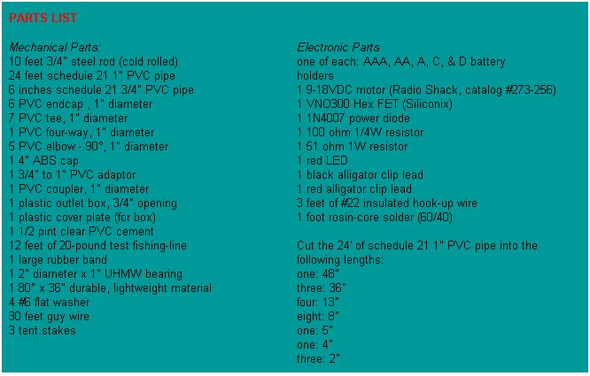

A CLOSER LOOK Kelly inserts an old and dying battery into Breezy's battery box to be recharged (above). A close-up (Far above) shows Breezy's recharging mechanism with its rubber-band drive attached to both the four-inch cap and the shaft.